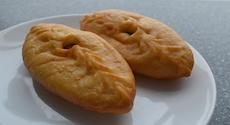

季節のおすすめレシピランキング
季節のおすすめレシピランキング
この季節にぴったりの食材で「旬」を味わう、CodeCampの厳選レシピをお試しあれ。

季節のバーニャカウダ

厳選きのこのソテー

野草シフォンケーキと野草茶

旬の魚介のワイン蒸し

新鮮素材の変わり揚げ
たまに行きたいこんなお店
今度の休みは足を伸ばして、新しいレシピのアイデアを見つけに。
料理人のセンスが光る、名店の独創的な一皿をご紹介。
割烹・山もと山菜のジュレ

季節の山菜を大胆にジュレに仕上げる。
一品目は麻布十番の名店、割烹・山もとから。店主自身が摘んできたという朝採りの山菜を和風のジュレに仕立てています。
和とフレンチの垣根を超えた一品です。
オステリア・ダ・ナカムラ カツレツのエスプーマ添え

衣にまぶすことの多いハーブとチーズをエスプーマに。
人形町の隠れ家イタリアン、オステリア・ダ・ナカムラから。イタリアとスペインで修行を積んだ中村シェフの独創的な一皿。
パルメザンとフリーズドライしたハーブをエスプーマにして添え、新たな食感を生み出しています。
香月房 牛フィレ肉の中華パン包み

甘辛く仕上げた牛フィレ肉を花巻に包む。
トロトロの三枚肉ではなく、あえてあっさりした牛フィレ肉を花巻と呼ばれる中華パンに包んだバーガー風の一品。
柔らかく蒸し煮にされたヒレ肉がヘルシーかつ贅沢な仕上がりです。